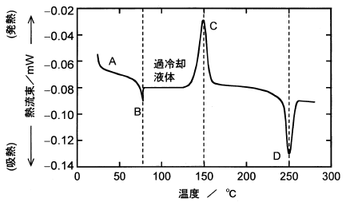

平成30年度 問18 高分子化学
結晶化度0%のポリエチレンテレフタレート（PET）を室温から280℃まで、一定速度で昇温させて示差走査熱量計（DSC）で測定を行った。その結果（下図）に関する次の記述の、【 】に入る語句の組合せとして、最も適切なものはどれか。なお、図中のA～Dは設問中のA～Dに対応する。

まず【 A 】状態のPETを室温から昇温していき、試料の温度が【 B 】に到達すると、高分子の分子運動が増大し、【 A 】状態から過冷却液体状態に変化する。さらに昇温を続けると、発熱ピークが出現する。これは、【 C 】に起因する。その後、ある温度に到達すると【 D 】による吸熱ピークが出現し、エンタルピーが急激に増加する。
| 選択肢 | A | B | C | D | |
|---|---|---|---|---|---|
|
①
|
ガラス | ガラス転移点 | 結晶化 | 分解 | |
|
②
|
非晶 | 結晶化温度 | 一次転移 | 融解 | |
|
③
|
結晶 | 融点 | ガラス転移点 | 分解 | |
|
④
|
ガラス | ガラス転移点 | 結晶化 | 融解 | |
|
⑤
|
結晶 | 二次転位点 | 一次転移 | 分解 | |
正答
④ A：ガラス、B：ガラス転移点、C：結晶化、D：融解
Aの状態はガラス状態です。結晶化度0%のPETは非晶質（アモルファス）で、室温ではガラス状態にあります。
Bのガラス転移点に到達すると、分子運動が増大し、ガラス状態から過冷却液体状態に変化します。
Cの発熱ピークは結晶化によるものです。非晶質のPETが熱を得て分子が再配列し、結晶構造を形成する過程で熱を放出します。
Dの吸熱ピークは融解によるものです。形成された結晶が融けるときに熱を吸収します。